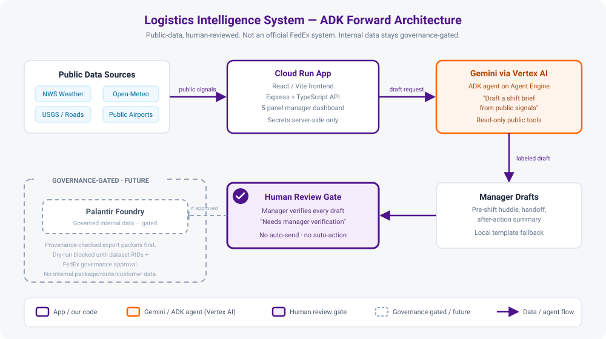

AI Efficiency Team
An operations-led AI hub that turns real operational friction into reusable prompts, starter projects, and governance-ready pilot packets.
Built by FedEx operations people, for FedEx operations people.
Public-safe · Human-reviewed · Safety Above All.
Why This Matters for FedEx
— Raj Subramaniam, President & CEO, FedEx Corporation
This repo is our regional contribution to that mission.
Sources collected in docs/presentation-proof-points.md.
The Daily Reality It Helps
AI is not abstract here. It removes friction from the work managers already do every shift.
Before the shift
Pull public weather and road signals, then draft a pre-shift huddle and safety note in minutes instead of scrolling five tabs.
During the shift
Turn a messy escalation into a clear handoff, summarize a metric spike, or rough out a customer service alert.
After the shift
Draft an after-action review, a near-miss report, or an executive update the manager edits and owns.
The goal is to save managers time and sharpen their judgment — never to replace it.
The Repository
One clean hub with three entry points, based on who you are:
Managers
Copy-paste prompts for shift briefs, safety memos, peak planning, and customer communication.
Technical contributors
Full-stack starter projects with React, Express, and Gemini integration. Clean, documented, source-owned.
Governance reviewers
Review checklists, pilot templates, data classification guides, and demo-readiness criteria.
Everything uses public or synthetic data until formal FedEx approval is in place.
Prompt Library — 51 FedEx-Specific Prompts
Organized by what managers actually do, not by AI theory:
- Daily Operations — Shift briefs, handoffs, escalations, after-action reviews
- Safety & Compliance — Pre-shift huddles, near-miss reports, seasonal alerts
- Peak Season & Surge — Contingency plans, ISP coordination, sort hub staffing
- Meeting & Communication — Agendas, action items, emails, executive updates
- Customer & Contractor — Service alerts, escalation responses, team recognition
- Linehaul & Routing — Feeder delays, alternate routing, yard management
- Process Improvement — Root cause analysis, improvement proposals
- Data & Reporting — Metrics summaries, trend explanations
Every prompt includes the Safe Prompt Rule: remove sensitive data first, review output before sharing, keep a human in charge.
The Daily Ops Playbook
A single printable page that turns the prompt library into a daily habit — copy, paste, edit, done.
What it is
A copy-paste daily checklist with the go-to prompts for a manager's morning, mid-shift, and end-of-shift routine. Print it, pin it by the desk, work down the list.
Why it matters
Lowers the barrier for the least technical teammate. No tool to learn — just a page that says what to do and which prompt to use, with the Safe Prompt Rule on every step.
Featured Project: Logistics Intelligence System
A deployed public-data decision-support prototype for station-level FEC supervisors and managers.

What it does
Public weather, road risk, and regional disruption signals before a shift. AI-generated draft briefs. Every data point labeled.
What it never does
No package data. No route manifests. No customer info. No live dispatch. No production claims.
Live Demo
Select a station scenario and see context-specific risk signals and AI-generated briefs:
Gunnison, CO
Mountain station — winter weather, chain laws, I-70 restrictions
Memphis, TN
World Hub area — thunderstorms, construction, air cargo windows
Indianapolis, IN
Secondary hub — highway accidents, wind advisories, yard safety
Phoenix, AZ
Desert station — excessive heat, dust storms, hydration protocols
The Efficiency Toolkit: Two Offline Tools
After the week closes, two single-file apps answer the two questions every efficiency review asks. Both run entirely in the browser — no install, no internet, real numbers never leave the machine.
Dock Efficiency Signal Lab — "Is the move real?"
Statistical process control + trend indicators + forecasting on weekly dock KPIs. Flags which moves are signal vs noise, ranks top/bottom facilities, and translates gaps to goal into dollars.
TLH/SPH Explorer — "Which lever moved?"
Splits each week-over-week efficiency change into its exact throughput (SPH) and labor-hours (TLH) effects — so an hours-cut gain is never mistaken for a productivity win.
Demo with synthetic data today; load a real weekly CSV locally during a pilot. Both ship with demo scripts and governance reviews.
We Benchmark Before We Adopt
Before upgrading any tool to a fancier model, the challenger has to beat the simple, explainable incumbent in an honest walk-forward test.
The first challenge: a forecasting foundation model
Amazon's Chronos-Bolt (zero-shot) vs the Signal Lab's simple ensemble, on synthetic weekly fixtures. The simple ensemble won — better accuracy overall and at three of four horizons — so the explainable baseline stays and no pilot was earned.
Why this matters
The gate works in both directions: it stops hype from displacing tools that work, and it gives any future upgrade a clear, measured bar to clear. Documented re-test triggers say exactly when we look again.
Also measured as background research: privacy-preserving (encrypted) scoring — feasible, kept on the research track pending security review.
Google Cloud + Gemini + ADK
A credible, governed path from prototype to agent — built entirely on tools we already use.

Internal-data access through Foundry stays behind governance review — we earn it with evidence from small pilots, not assumptions.
Safety & Governance Built In
Data boundaries
- Public or synthetic data only
- Every signal has a source label
- Synthetic values marked "demo"
- No internal FedEx systems touched
Human review
- Every AI draft says "Needs manager verification"
- No live-action buttons
- No automatic external sends
- Prototype banner on every screen
From Prototype to Pilot
We are not asking for production approval today. We are asking to run small, measurable pilots.
1. Propose
Use the pilot template: problem, scope, data classification, success criteria, risk review.
2. Run
Small experiment with synthetic data, clear metrics, and a human review step.
3. Decide
Evidence-based go / no-go. Bring IT, legal, and compliance into the conversation with data, not just ideas.
The template includes demo readiness checklists, failure criteria, and governance review steps.
Decision Requested Today
Approve one small, reversible next step with public, synthetic, or scrubbed data only.
1. Name an owner
Nominate one low-risk pilot owner and backup owner.
2. Open prompt intake
Collect 10 manager workflow prompts over 30 days, with sensitive details removed.
3. Keep the gate
No internal data, production workflow, or external messages until the project checklist is complete.
Candidate first pilots are listed in docs/pilot-candidate-shortlist.md.
Questions?
The repo is public. The prompts are copy-paste ready. The prototype source is available for review.
FedEx AI Efficiency Team — Regional Standup
Built with Safety Above All.